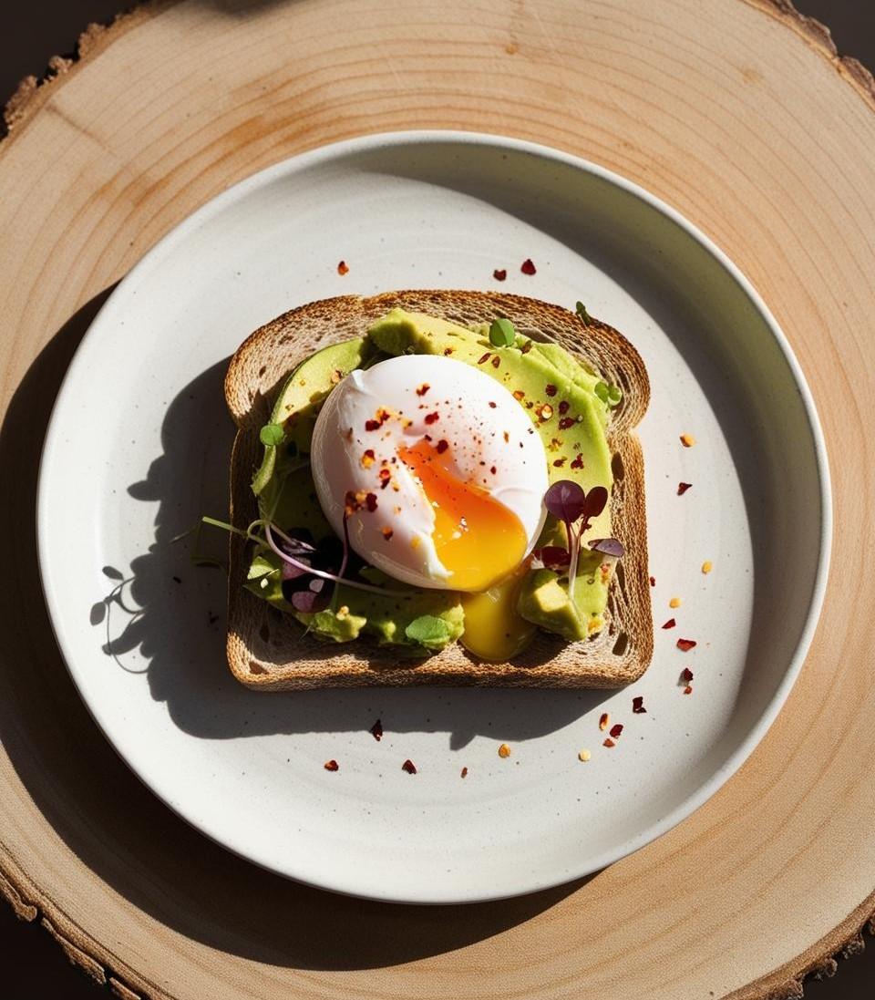

Вівсянка з ягодами та горіхами
Інгредієнти:- • ½ склянки вівсяних пластівців
- • 1 склянка рослинного молока
- • Жменя свіжих ягід (малина, чорниця)
- • 1 ч. л. меду або кленового сиропу (за бажанням)
- • Жменя подрібнених горіхів
- 1. Залити вівсянку молоком і варити 5–7 хвилин на середньому вогні.
- 2. Додати мед, перемішати.
- 3. Викласти в миску, зверху додати ягоди та горіхи.

Тост з авокадо та яйцем пашот
Інгредієнти:- • 1 шматок цільнозернового хліба
- • ½ стиглого авокадо
- • 1 яйце
- • Сіль, перець, мікрозелень — за смаком
- 1. Обсмажити хліб на сковороді або підсушити в тостері.
- 2. Авокадо розім’яти виделкою, посолити.
- 3. Зварити яйце пашот (в окропі з оцтом — 3 хв).
- 4. Намазати авокадо на тост, зверху покласти яйце та прикрасити зеленню.
Сирна запіканка без цукру
Інгредієнти:- • 400 г сиру (5–9%)
- • 2 яйця
- • 2 ст. л. рисового або кукурудзяного борошна
- • Ваніль, цедра лимона
- • За бажанням — підсолоджувач
- • Ягоди — для подачі
- 1. Змішати всі інгредієнти до однорідності.
- 2. Викласти у форму, застелену пергаментом.
- 3. Випікати при 180°С ~30 хв.
- 4. Подавати з ягодами або йогуртом.
Зелений смузі з бананом і шпинатом
Інгредієнти:- • 1 банан
- • Жменя свіжого шпинату
- • ½ склянки рослинного молока або води
- • 1 ч. л. протеїну
- • За бажанням — шматочок імбиру або м’яти
- 1. Збити всі інгредієнти в блендері до однорідності.
- 2. Перелити у склянку та пити охолодженим.
Чіа-пудинг з кокосовим молоком і фруктами
Інгредієнти:- • 3 ст. л. насіння чіа
- • 200 мл кокосового молока
- • Фрукти для подачі (ківі, полуниця, банан)
- • Кокосова стружка — за бажанням
- 1. Змішати насіння з молоком, залишити на ніч у холодильнику.
- 2. Вранці перемішати та додати свіжі фрукти.